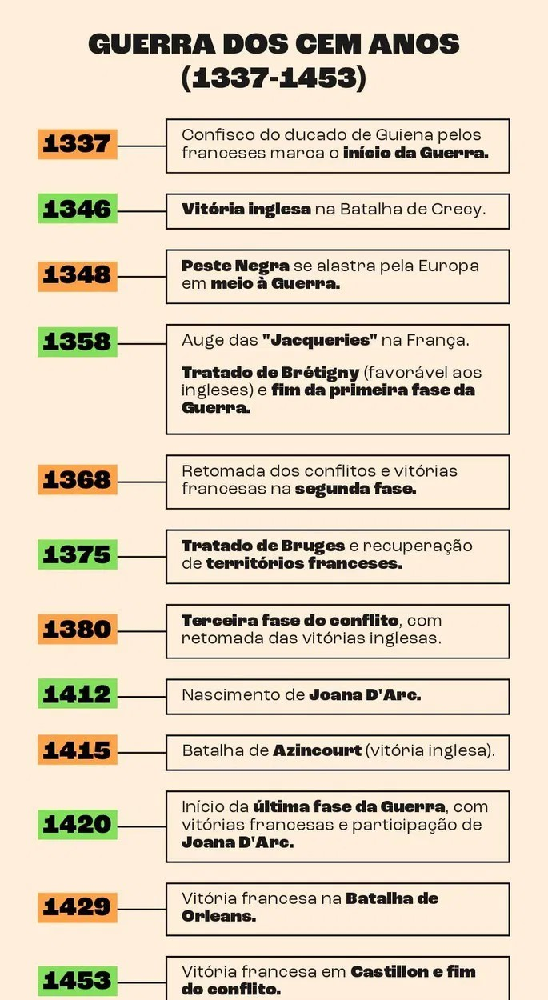

Gerra Dos Cem Anos (1337-1453)
A Guerra dos Cem Anos foi uma longa e descontinuada guerra entre Inglaterra e França. Motivada por razões políticas e econômicas, ocorreu entre 1337 e 1453 (116 anos).
Este conflito teve raízes profundas em questões dinásticas e territoriais, e suas repercussões moldaram o curso da história europeia.
Na primeira parte da guerra, a Inglaterra saiu vitoriosa e conquistou importantes territórios na França. Contudo, na fase final, os franceses obtiveram uma série de vitórias militares e recuperaram boa parte de seus territórios, saindo vitoriosos do conflito.
Principais Causas Da Guerra Dos Cem Anos
Disputa pelo trono francês: a morte em 1328, de Carlos IV da França, sem herdeiros diretos, desencadeou uma disputa pelo trono francês. O rei Eduardo III da Inglaterra, neto de Filipe IV da França, reivindicou o trono francês baseado em sua linhagem materna. No entanto, a nobreza francesa preferiu Filipe VI, da Casa de Valois, como rei.
Tensões territoriais: a região de Aquitânia, no sudoeste da França, estava sob controle inglês, mas os franceses contestavam essa posse. Além disso, havia disputas sobre o controle de Flandres (parte da Holanda e Bélgica atuais) que, na época, possuía fortes laços econômicos com a Inglaterra, mas cuja aristocracia estava vinculada à nobreza francesa.
Rivalidade feudal: o sistema feudal europeu era marcado por tensões internas à nobreza, com várias dinastias disputando poder e influência. A relação entre os monarcas franceses e ingleses era complexa, com ambos os lados buscando expandir seu domínio territorial.
Impacto econômico: as áreas contestadas eram economicamente importantes. O controle sobre regiões produtoras de vinho, lã e outros recursos agrícolas e artesanais tinha significativas implicações econômicas.
As Fases e Principais Acontecimentos Do Conflito
A Guerra dos Cem Anos pode ser dividida em quatro fases, cada uma marcada por diferentes campanhas e trégua.
1ª fase - Ascensão Inglesa (1337-1360)
A primeira fase do conflito foi marcada por uma série de vitórias militares inglesas, que conquistaram pontos estratégicos e terminaram controlando quase toda a faixa costeira do norte e oeste da França.
Por sua vez, os franceses sofreram perdas enormes, tanto por causa da guerra como da Peste Negra, e chegaram a ter seu rei, João II, feito prisioneiro pelos inimigos.
Principais Eventos
Batalha de Crécy (1346): liderados pelo rei Eduardo III, os ingleses obtiveram uma vitória decisiva usando arqueiros longos, uma inovação militar que dominou os cavaleiros franceses.
Cerco de Calais (1347): a captura de Calais deu aos ingleses um importante ponto estratégico e comercial.
Tratado de Brétigny (1360): Este tratado marcou uma trégua temporária, concedendo aos ingleses territórios adicionais na França. Em troca, os ingleses libertaram o rei João de seu cativeiro.
2ª fase - Revés Inglês (1360-1380)
Reconquista Francesa: sob a liderança de Carlos V, os franceses começaram a reconquistar territórios perdidos. Pelo Tratado de Bruges (1375), a Inglaterra teve seus territórios na França reduzidos à posse de Calais e de parte da Gasconha.
Essa fase foi marcada por batalhas intermitentes, isto é, confrontos mais esporádicos e mudanças de controle territorial.
3ª fase - Novas derrotas francesas (1380-1420)
A terceira fase da Guerra dos Cem Anos marca uma nova série de derrotas francesas.
As principais causas dessas derrotas foram:
os problemas psiquiátricos do rei Carlos VI, o que o tornou incapaz de governar efetivamente;
a ascensão da Casa de Borgonha, ramo dinástico rival ao Rei da França e que dividiu o reino;
os sucessos táticos e militares do rei Henrique V, da Inglaterra.
Os principais episódios dessa etapa foram:
Batalha Azincourt (1415): Henrique V da Inglaterra obteve uma vitória esmagadora, novamente usando arqueiros longos.
Tratado de Troyes (1420): este tratado reconheceu Henrique V como herdeiro do trono francês, mas a morte precoce de Henrique e Carlos VI deixou novamente a situação instável entre os reinos.
4ª fase - Ressurgimento Francês (1420-1453)
Período de recuperação da França, impulsionada pela inspiração na figura de Joana D’Arc e pelo crescente uso da artilharia. Superou as típicas guerras de cavalaria das primeiras fases do conflito.
Joana d'Arc, uma camponesa da região da Lorena, tornou-se uma figura militar central no conflito. Ela afirmava ter recebido visões divinas do próprio arcanjo Miguel, que lhe solicitava coroar o príncipe herdeiro da França e libertar o reino dos ingleses.
Comandando um pequeno exército, Joana D'Arc obteve vitórias notáveis, inspirando os franceses e liderando a vitória na Batalha de Orléans (1429).
Assim, sob o comando de Carlos VII, que foi coroado rei com a ajuda de Joana D'Arc, os franceses conseguiram expulsar os ingleses, culminando na vitória em Castillon (1453), que efetivamente encerrou a guerra.

Outros acontecimentos durante a guerra dos Cem Anos
A guerra durou mais de cem anos, não foi contínua, apresentou momentos de luta, com vitórias de ambos os lados, e momentos de trégua.
O conflito foi sempre acompanhado por outras calamidades, como a fome e a peste. A fome era consequência da guerra, das prolongadas secas e das colheitas insuficientes, que provocaram um aumento nos preços dos gêneros de primeira necessidade, como o trigo.
Em 1348, a Peste Negra se alastrou com rapidez pela Europa, custando a vida de mais de um terço da população.
Em 1358, em meio ao conflito, à fome e à Peste, eclodiu uma violenta revolta camponesa, na França, conhecida como Jacquerie. Os camponeses se revoltaram contra a miséria e as imposições de seus senhores feudais, o que acentuou ainda mais a crise no país. O nome "Jacquerie" vem de “Jacques Bonhomme”, um termo pejorativo usado pelos nobres para se referir aos camponeses.
Dos aproximadamente 60 mil camponeses que participaram do episódio, grande parte foi massacrada pelos nobres apoiados pelo rei.
Na Inglaterra, a situação dos camponeses também era calamitosa. Esfomeados e oprimidos pelos senhores feudais, uma massa de milhares de rebelados destruiu castelos, assassinou senhores e cobradores de impostos e marchou sobre Londres em 1381. Os reis e nobres também reagiram à revolta e executaram a maioria dos rebeldes.
Consequências da Guerra dos Cem Anos
A Guerra dos Cem Anos é considerada um dos episódios centrais para a crise do feudalismo e para o fim da Idade Média
Com a Peste Negra, as Jacqueries e a fome, o evento provocou uma considerável redução na população da Europa no século XIV, o que desestruturou a força das relações feudais na Europa.
Além disso, a guerra enfraqueceu a nobreza francesa e inglesa, muito desgastada pelos conflitos. Isso abriu espaço para o fortalecimento dos reis e para o processo de centralização política na Europa.
Didaticamente, é possível destacar as seguintes consequências da Guerra:
Territoriais: a França recuperou quase todos os territórios ocupados pela Inglaterra, exceto Calais.
Políticas: a guerra enfraqueceu o feudalismo e fortaleceu as monarquias nacionais. Na França, a autoridade do rei foi reforçada, contribuindo para maior centralização. Já na Inglaterra, eclodiu uma guerra civil conhecida como Guerra das Rosas.
Econômicas: a guerra devastou a economia francesa, mas também promoveu o desenvolvimento de novas tecnologias e práticas agrícolas.
Militares:ouve inovações militares significativas, incluindo o uso de artilharia, armas de fogo e a transição de exércitos feudais para exércitos permanentes.
Culturais: a guerra ajudou a consolidar identidades nacionais distintas na França e na Inglaterra.
Mapa mental para entender a Guerra dos Cem Anos (em resumo)
MAPA MENTAL